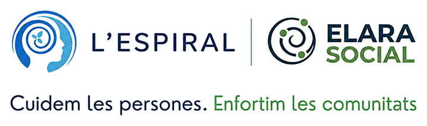

Cursos digitals gratuïts · Rutes a peu per la teva ciutat
Camins d'Esperança [Activa]
Una pràctica, una caminada, un petit pas. Tria el que et preocupa i la ciutat on vols caminar.
1. Què et porta aquí?
-
Quan la vida et desborda
Ansietat, angoixa, massa pensaments o la sensació de no poder més.
És el meu cas -
Quan cuidar-nos és una tasca col·lectiva
Soledat, cansament emocional o falta d'espais on sentir-te escoltat/da.
És el meu cas -
Quan el món et preocupa
Crisi climàtica, sequeres, incendis o el món que deixarem.
És el meu cas
2. On vols caminar?
Cada ciutat té el seu mapa i les seves rutes. Surten de places, parcs i equipaments a prop de casa. N'hi ha de molt curtes, d'uns 10 minuts, i de més llargues, de més d'una hora.
Ara hi ha rutes a Barcelona, el Prat de Llobregat, Olot i Vic, i se n'aniran afegint més.
- Barcelona Barcelonès 96 rutes repartides pels 10 districtes de la ciutat. Veure les rutes
- El Prat de Llobregat Baix Llobregat 17 circuits urbans, 7 rutes des dels equipaments i 9 rutes pel Delta del Llobregat. Veure les rutes
- Olot Garrotxa 13 rutes curtes i circulars, des dels CAP, l'hospital, places, ponts i parcs. Veure les rutes
- Vic Osona 28 rutes curtes i circulars, pels parcs i des dels CAP i hospitals. Veure les rutes
Cada curs té les seves rutes a cada ciutat: el curs et dona la pràctica, i la ruta, el temps per caminar-la. La teva ciutat no hi és? Fes la caminada pel teu barri o en un lloc tranquil.
Com funciona
-
1. Fes la pràctica
Escolta l'àudio o mira el vídeo de la passa abans de sortir.
-
2. Tria una ruta
Mira el mapa de la teva ciutat i escull la que s'adapti al teu temps.
-
3. Camina i observa
Deixa que la pràctica t'acompanyi, al teu ritme i sense buscar respostes ràpides.
-
4. Porta-ho al dia a dia
Pensa què t'emportes: una mirada nova, una necessitat o un petit pas possible.
Cada curs, 7 passes
Tots els cursos segueixen l'Espiral del Treball que Reconnecta, de Joanna Macy, adaptada en set passes senzilles. Ho pots fer en 7 dies o al teu ritme, i no cal experiència en meditació.
Cada passa té quatre moments:
- Explora: un vídeo d'introducció de 3 a 5 minuts.
- Practica: una pràctica guiada d'uns 15 minuts.
- Camina: un temps de reflexió en una de les rutes.
- Integra: un vídeo de tancament per portar-ho a la vida.
Preguntes freqüents
Hi ha rutes de tots els cursos a totes les ciutats?
Encara no. Cada ciutat té rutes pensades per a cada curs i n'anem afegint. Si la teva ciutat encara no en té del teu curs, pots fer la caminada pel teu barri o en un lloc tranquil.
És realment gratuït?
Sí. Només t'has de donar d'alta a la plataforma dels cursos, i te'n pots donar de baixa quan vulguis.
És teràpia?
No. És un minicurs vivencial de pràctiques i reflexió. Pot ajudar molt, però no substitueix la psicoteràpia si estàs en un moment clínicament delicat.
La meva ciutat no hi és. Puc fer el curs?
És clar. Pots fer el temps de reflexió en una passejada pel teu barri o en un lloc tranquil.

Una iniciativa de
L'Espiral i Elara Social, amb la mirada de la Prescripció Social i la salut mental comunitària.